日本の軍艦が祀られている廟があるというので行ってみることにした。
その存在は
ブログや書籍などで数多くの台湾の様々な情報を発信されている片倉佳史さんの記事で知った。
場所は高雄国際空港の近く。以前は別の場所あったのが近年この地に移転したのだという。
近くといえども空港から歩いていけるわけではない。
調べてみると近くに空港と高雄市内を結ぶ地下鉄の駅がある。
しかも駅には高雄市が運営している自動清算方式のレンタサイクルがあるじゃないか。
この自動清算方式のレンタサイクルってクレジットカードさえあれば簡単に借りられるシステムで（場所によって異なるが）、日本だけでなくヨーロッパやアジア各国で増えてきたご様子。
丁度歩くのには厳しい距離だったので自転車を借りていざ保安宮へひとっ走り！
駅から保安宮への道中は最近開発されたばかりのようで空き地が目立つ。
陽も沈み暗くなり、ホントにこんなところにお寺なんてあるのかなあ、とやや不安になったころやけに派手な廟が見えてきた。
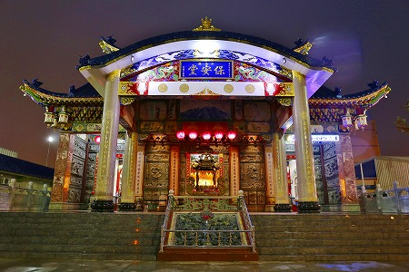
これが保安宮である。
台湾の一般的な寺廟建築とはやや趣が異なる。
何となく日本の寺社建築っぽい雰囲気なのだ。
画像では見にくいが額の下には菊の紋があり、その唐破風の内側には富士山や日本の女性が踊っている絵まである。
なんなんだ？この日本フィーチャーしまくりの廟は！
中に入ってみる。
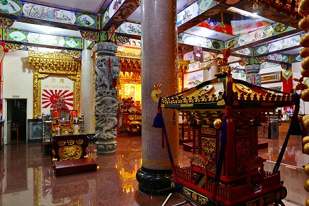
日本の神輿があるではないか。
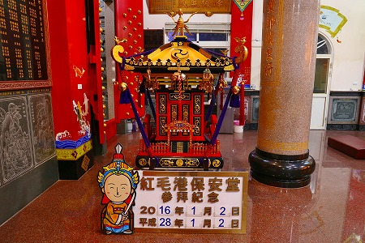
しかも日付が西暦と平成。
民国暦が一般的に使用されている台湾で西暦と平成しか表示されていない、ということは明らかに日本人向け。
それだけ日本の人が来ているのだろう。
そりゃそうだよね。
だってこんなですもの。
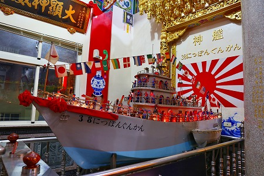
巨大な船がドドーンと鎮座しているのだ。
しかも背後には日章旗＆神艦 さらに「38にっぽんぐんかん」の文字。
見たところ軍艦かどうかは微妙なところだが、まあ、それはいいや。
長さは3メートルほど。結構大きいな。
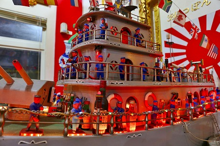
船にはズラリと水兵さんが並んでいる。
一体全体、何故台湾の廟に日本の軍艦が祀られているんだろうか？
その理由は追々述べるとして、まずは船の様子をご覧あれ。
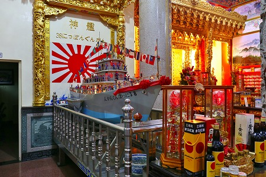
船は正面向かって左側にあり、手前には何故か赤玉ワインが多く奉納されていた。
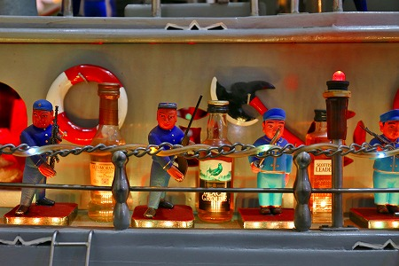
デッキの水兵さんの合間にはウイスキーのミニボトルが並んでいる。
水兵さんに呑んでほしい、ということなのだろうか？
日章旗を背にした船。
ちなみに万国旗にあの国の国旗はありませんでした。
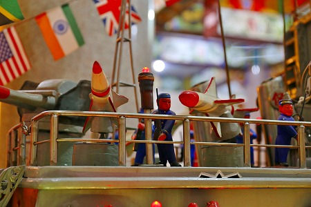
ミサイル…
よく見るとてっぺんにはジエット機まであるぞ。異様に小さいけど。
甲板で軍務に励む水兵さん。
決して精巧ではないが一体一体表情が違っていて作り手の気合いが伺える。
水兵、酒、水兵、酒、水兵、酒…
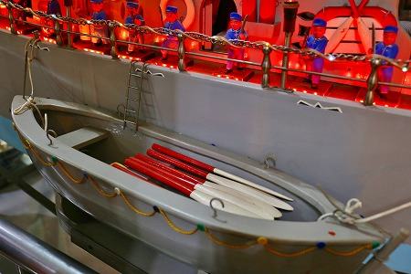
脱出用ボートも抜かりないのです。
廟の中央には様々な神々が祀られている。
その一画には日本の軍人さんが祀られている！
この廟に日本の軍人さんと船が祀られている理由を時系列順に説明します。
因みに高雄は日本統治時代軍港の町だった事を先に述べておく。
戦後、ある台湾の漁師の網に頭蓋骨が掛かったので地元の廟にその骨を祀ったところ大漁が続いた。
そのため、その頭蓋骨を本格的に祀るべく1953年に保安堂を建立した。
その後、漁師の夢枕に日本海軍38号哨戒艇の船長が現れ、その頭蓋骨は自分のもので、部下を日本に連れて帰れなかったことを残念に思っている、と語ったそうな。
その「夢のお告げ」を受けて漁師たちが90年頃その船長と船員の慰霊の為に「神船38にっぽんぐんかん」という船の模型を建造したのだという。
その船長は海府大元帥という名の神様となってこの廟に祀られた、というのがこの廟の大まかな流れ。
その後、近年移転して、2014年に現在の廟に船共々移転してきた、というわけ。
台湾の人が日本人に優しい、という側面はあるにせよ、日本の軍人を神様に祀りあげちゃうメンタリティーって凄いよね。
奉納された御札や御神酒などを見る限り日本からの参拝客はかなり多いようだ。
勿論日本の軍人が祀られているのだから日本人が来るのは理解できるが、一般的には話題になっていない、しかもあまり交通の便の良くない場所にこれだけ日本人が来ていたのはチョットびっくりした。
あまりにも日本人の奉納が多くて、何か手ぶらで来ちゃってすみません。的な気分になっちゃったよ。
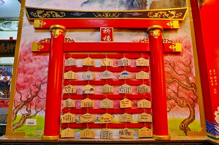
日本式の鳥居に日本式の絵馬。
結構徹底している。
この廟は台湾の人たちが自発的に作ったもので、そこには政治的な意図など一切なく、単純に大漁祈願の為に始まった、というハナシが私は好きだ。
もちろん日本から参拝に来た人の中には様々な捉え方があろうが、この廟を建立した人々にしてみれば彼らの宗教的文脈の中でたまたま日本人が登場してきただけなのだろう。
日本の軍人すらも神様になってしまう台湾の民間信仰の懐の広さとおおらかさを感じた。
廟の片隅で昼寝（もう夜ですよー！）していたおじさんがむくりと起き上がり、我々が日本人であることを悟ってか、おもむろに船の近くにあったスイッチをONにしてくれた。
すると…
こんな感じだった船に…
明かりがともるのだ！
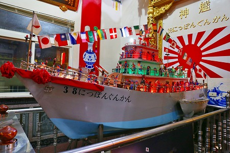
え？判んない？
よーく見てちょ。艦橋の部分が明るく光ってるでしょ。
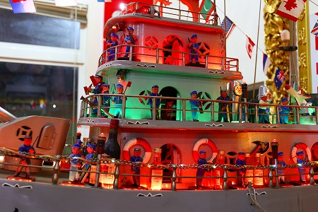
あと、サーチライトもビカっと光ってるぞ。
そして何より印象的だったのがこちら。
主砲が右に左に凄いスピードで動き出した。
あ、ミサイルもぐいぐい動いてるよ…。
思いの外、精巧なディテール描写にチョット感動しちゃいました。
いや、ミサイルはなかろうよ、戦中の哨戒艇には。
あとジェット機も。
廟内の片隅には「かいふだいげんすい」とプリントされたシャツや帽子がなども売られていた。
左の書包（ブックカバーかな？）には保安堂という刺繍の下に「パッケージのボランティア」という謎の文言が縫い取られていた。何だ？
ちなみに保安堂のパンフレットがあったが日台両語で書かれていました。
廟の前には提灯が並んでおり、まるで日本のようだった。
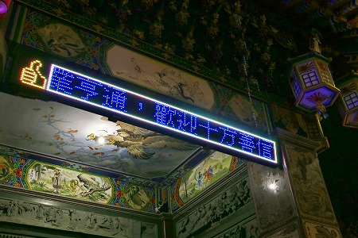
電光掲示板は台湾の廟ではそんなに珍しくはないのだが、「いいね」マークとかもう取り入れてるんだぁー。
外に出たら、物凄い雨になっていた。
あ、チャリで来たんだっけ…。
結局ずぶ濡れになりながら駅まで向かいましたとさ…。
次へGO！